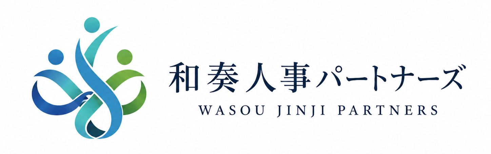

経営者の方へ
2代目・3代目が経営する企業の
「人の問題」は、
採用の前に解くべき問題がある
- 同族経営の当事者だったコンサルタントが伴走
- 採用・定着・育成を一貫してサポート
- 創業家のガバナンスから組織を根本から変える
私は、創業家の2・3代目経営者が抱える人材採用・定着・育成の悩みを解決するコンサルタントです。
具体的には、売上は順調なのに「人を採用できない、辞める、育たない」の三重苦で悩まれている創業家が経営する企業に対し、伴走・参謀型で問題解決するコンサルティングを提供しています。
一般的なコンサルティングはノウハウや仕組みだけで組織を動かそうとしますが、同族経営ではまず「家族や親族間の感情とビジョン」を揃えなければ何も機能しません。
私は、創業家の想いを言語化し、それを評価制度と採用に直結させることで、優秀な人材が自ら定着し、経営者が真の経営に専念できる強靭な組織の仕組みを提供します。
創業家が経営する企業には
5つの特有の問題があります
人が辞めていく創業家が経営する会社には、5つの特有の問題があります。
価値観の衆突
経営陣（家族・同族）の間で意見や方向性がバラバラ。誰の指示に従えばいいのか、社員は混乱していませんか？
ダブルボス状態
先代会長と現社長の役割が曖昧なまま。社員はどちらの顔色を窺えばいいか分からず、組織が機能不全に陥っていませんか？
先代との比較
「先代ならこう判断した」——そう言われるたびに、自分の決断への自信が揺らぐことはありませんか？
古参幹部との衆突
古参幹部の「先代の時はこうだった」という言葉が、変革の足かせになっていませんか？
幹部候補が育たない
自分を支えてくれる右腕が見当たらない、育っていない……気づけばいつも、社長一人が色々と抱え込んでいませんか？
このような環境が続くと——
- 自分で考えて動く社員が育ちにくく、指示待ちの文化が根づいてしまう
- 上の顔色を窺う社員が増え、生産性が上がらない
- 採用しても定着しないスパイラルに陥り、採用コストだけが膨らんでいく
という問題が起きます。
どの企業にも大なり小なり起きている問題ですが、創業家が経営する企業には特にこの問題が顕著です。
これは「あ・うんの呼吸」の副作用によるものです。創業家は日常生活からのコミュニケーションが土台にあるため、このあ・うんの呼吸が自然に生まれます。しかし、他人である社員とはコミュニケーションの度合いが圧倒的に違います。なのに、ある程度の関係構築が出来た段階で、家族と同じコミュニケーションをやりがちです。社員にとっては理解不能であり、ストレスでしかありません。
どれだけ取り組んでも
変わらない本当の理由
このような状況から脱却しなければ……と、多くの経営者が外部の講師を招き社員研修を行ったり、コンサルタントや人材マネジメントのシステム導入などの対策をされてきています。特に、同業者での成功事例は経営者にとって大変魅力的です。出来そう……と感じやすいのです。特に、新しいもの好きの経営者には……。
それでも大きな改善は見られない、変わらないのです。なぜでしょうか？
成功事例には「目に見えるノウハウ」と、目に見えない「それを動かすエンジン」があります。エンジンとは、事業への魂・想い——つまり経営理念です。仕組みだけ移植しても、エンジンのない船は動きません。
そして、創業家の企業の場合は、これに「同族間の感情と方向性」を揃えることが加わってきます。
「エンジン」なき仕組みは動かない
どれほど優れた仕組みを入れたり社員に研修を行っても、人の心がバラバラなままでは機能しません。特に同族経営では、感情と経営が混ざり合い、言語化されないまま積み上がっていく。それが、すべての問題の根っこにあります。
同族間の感情と方向性が揃っていない
バケツに穴が空いたまま、新しい人材を注ぎ込んでも——また、こぼれていくだけです。だからまず取り組むべきは、採用や育成の「前」にある、創業家のガバナンスです。この順番を間違えると、どんなノウハウも仕組みも、空回りし続けます。
バケツに穴が空いたまま、新しい人材を注ぎ込んでも——
また、こぼれていくだけです。
だからまず取り組むべきは、採用や育成の「前」にある、創業家のガバナンスです。
この順番を間違えると、どんなノウハウも仕組みも、空回りし続けます。
私自身が同族企業の
「当事者」でした
実は、私自身が同族企業の「当事者」でした。叔父が経営する着物専門店に大卒後から勤務していたのです。
30数店舗の着物専門店と染織メーカーを別会社に持つ、当時それなりに名前が知れ渡っていた会社でしたが、同族間の関係が酷かった企業でした。
この企業には私にとって叔父にあたる方が3名おり、本家の長男が社長（2代目）、社長の弟と義兄、社長の息子や生え抜きの社員2名が取締役を務めていました。
ある店の店長を務めていた時、こんなことがありました。店が営業中に社長から電話がかかってきたのですが——
常務（弟）の部屋は社長室の2つ隣にありますが、直接話せないほど、兄弟の仲は壊れていたのです。
会議でも意見の食い違いから口論に達し、弟の常務は会議の部屋から出ていってしまう……。社内を見渡せば、社長派と常務派に分かれた社員たち。どちらにもいい顔をする人、無関心を装う人——こんな小さな会社にも、派閥というものが生まれていました。
さらに、ここに社長の息子が加わります。この息子（従兄弟）が父親である社長に反発していただけでなく、叔父の常務とも衝突していましたので、まさに三つ巴の争い……。
社長と息子は親子だけに、叔父との兄弟関係とは別の意味で難しいものでした。普通の会話がそもそもできないのです、仕事でも生活でも。お互い相当なストレスだったと思います。叔父と息子の2人の間で笑い合うことは、結局見ることはなかったと思います。
3人の間で板挟みになりながら、私は調整役を担い続けました。当時を思い出すと、まさに骨肉の争いだったと思います。何度も夜中に目が覚めました。
2人の叔父の名誉のためにいうと、いずれの叔父も人として好きな方でしたし、尊敬の念もありました。この2人の叔父には教えられたこともたくさんありました。だからこそ、何とかしたかったのです。当時、すでに経営が傾いていましたので、こんなことをやっている場合ではないと、何とかお互いの意見の食い違いや誤解を解くために、間に入りながら関係改善を探りました。
しかし……
声を出すことが
出来なかった
常務だった叔父は元々患っていた病気で亡くなり、その後を受けるように私が常務取締役になりました。
その際、社長から告げられた会社の財務の数字を見た時、私は声を出すことが出来ませんでした。
「終わっている……」。メーカー卸の事業の赤字があまりにも莫大かつ、それが何年も続いていたのです。融資で何とか繋いでいたに過ぎなかったのです。
ここまで悪いとは……。私が担当していた事業部の売上は好調でしたので、思いも寄らぬことでした。そこから必死に各事業部の立て直しを始めました。あらゆる対策を打ち、業績が向上し始めました。
しかし、あの3.11の時にすべてが終わってしまいました。全体の3分の1ほどの店舗に被害や影響が出た上、銀行から予定していた融資が立て続けに見送りに……。残念ながら3ヶ月後に倒産しました。
同族間の感情の問題を放置したまま経営を続けると、どんなに業績改善に取り組んでも、根本的な解決にはならない。
「あの時味わった痛みを、あなたには絶対に経験させたくない」
——その思いが、今も私を動かしています。
独立後、すべてのクライアントは
同族会社
残務整理をしてからコンサルタントとして独立し、少しずつ契約を獲得することが出来たクライアント、そしてこれまでのクライアントもすべて同族会社です。クライアントごとに抱えている課題は異なりますが、一つだけ同じ悩みがあります。「人」の問題です。
- 求人を出しても応募が来ない
- 応募が来ても希望した人材ではなかった
ここ数年こそ、あらゆる業界で"応募が来ない""採用ができない"と云われるようになりましたが、私のいた着物業界は昔から厳しかったです（今はもっと厳しいですが）。年間1,000万円のコストをかけて採用できたのは、"たったの2名"……しかもその2名も半年で退職……なんてことが、あるクライアントであったぐらいです。
元々、着物店向けの集客コンサルタントとしてクライアントに貢献してましたが、クライアントの窮状を見て何か出来ないかと考えました。
その時、私の中で「採用求人とは働きたい人の集客」では？とのパラダイムシフトが起き、ある求人法を試したところ、一気に応募者が集まりました。この結果がクチコミや紹介等で広まり、他業界でも結果を出すことが出来ましたのです。
但し、支援したクライアントから「入社した人が辞めてしまったので、また求人お願いします。」とのご依頼が時を経てありました。しかも、ほぼすべてのクライアントからです。
なぜだ……？
これが今回ご案内することになったサービスのきっかけです。いくらあらゆる手法で人を集め、採用しても、入社後の社内環境が整っていなければ、同じことの繰り返しになります。バケツに穴が空いた状態でこれを繰り返せば、莫大なコストが嵩み、企業体質を弱体化させるだけです。
特に、創業家の企業の場合、世間で知られている組織戦略や人事戦略だけでは上手くいかないのです。先ほども述べた「同族間の感情と方向性」を揃えることから始める必要があります。これまで創業家のガバナンス、社内ガバナンスの支援を数多くして参りましたが、ほとんどのクライアントの社員の定着率が劇的に変わりました。
方向性と価値観を揃えると、
組織は劇的に変わります
先代の御父様と後継者のお嬢様、御父様の弟の間で三つ巴状態が続き、不安定な経営状態でした。徹底した話し合いを重ねた後にビジョンを明確にし、採用求人の支援まで実施。年間の正社員採用は平均３〜４名から１１名へと増加しました。
採用しても半分以上の社員が辞めてしまっていたＳ社。同族間の価値観を統一後、経営理念を一から見直し、評価システムや給与体系を理念と一貫性が持てるものに再構築。離職率が大幅に改善しました。
人の問題を根本から解決する
3つのステップ
あらゆる経験から、同族企業における人材採用・定着・育成の問題を解決するには、3つのステップを踏む必要があります。
① 創業家のガバナンス
同族間の感情・方向性を言語化し、「心を揃える」ところから始めます。第三者だからこそできる、客観的な調整と仕組みづくりです。ここを手抜きすると、経営の好循環のスパイラルに入ることは出来ません。
社員は上をよく見ています。創業家の価値観や方向性が揃うと、社員も変わるのです、不思議に。このステップは自身の心への問いや言葉にならない想いを言語化することが中心になりますので、思わず逃げたくなることもあります。しかし、その効果は絶大です。
また、これと連動しますが、誰にも相談できない経営者の"想い"の言語化を支援できます。要は相談相手です。経営者は孤独と言われますが、創業家の経営者の孤独感は一般のサラリーマン社長には分からない苦労があります。先代に気遣い、社員には弱みを見せられない……外部に相談しても通り一遍の言葉しか返ってこないことが多いのではないでしょうか。そんな言葉にならないモヤモヤを解消し、次の行動に移せるよう支援させていただきます。
② 社内組織の最適化
バケツに穴が空いた状態で人材を採用しても、また辞めていくだけです。企業文化の礎になる経営理念の見直しから、行動指針の整理、評価システム・給与体系の再構築を通じて離職率の低下、幹部育成に繋げます。
理念から価値観、行動指針、成長・評価制度まで一貫性のあるものにすることが重要です。
③ 大手求人媒体に頼らない採用求人方法
知名度のない中小企業は、荒波に晒される大手求人媒体では埋もれてしまい勝負になりません。来てほしい人材からダイレクトに応募を集める独自手法で、コストを抑えながら質の高い人材を集めます。
着物業界という採用が極めて難しい業界で編み出したこの手法は、他業界でも着物業界以上の結果を出しています。
この中で最も重要なのが①の創業家のガバナンスです。ここが全ての起点です。社員は上をよく見ています。創業家の価値観や方向性が揃うと、社員も変わるのです、不思議に。このステップは自身の心への問いや言葉にならない想いを言語化することが中心になりますので、思わず逃げたくなることもあります。しかし、その効果は絶大です。


株式会社和装コンサルタンツ 代表取締役
採用人事・組織コンサルタント
東京都港区高輪2－14－17 グレイス高輪ビル8階
叔父が経営する30数店舗の着物専門店（染織メーカーも別会社に保有）に大卒後から勤務。社長・常務・後継者の三つ巴の争いの中で調整役を担い続け、常務取締役として経営再建に奔走。しかし東日本大震災の影響で融資が途絶え、150名の社員を路頭に迷わせたという経験を持ちます。
「あの時味わった痛みを、あなたには絶対に経験させたくない」——その思いが、今も私を動かしています。
独立後も、すべてのクライアントは同族会社。着物業界で編み出した「ダイレクト求人採用法（Google広告×求人LP）」は他業界でも劇的な結果を出しています。しかし採用の前に「定着できる組織」を作ることこそが、最も重要だと確信しています。
同族会社のいざこざや特有の問題に対する対処方法・運営方法についても、自身が同族会社で勤務していたからこそのノウハウを持っています。また、採用求人からでも、定着の各メニューからでも、各企業の「人の問題」を解決できる用意があります。
その悔しさが、
今も私を動かしています。
あの時、最後に残っていた150名の社員を路頭に迷わせた——その悔しさが、今も私を動かしています。
会社は倒産させてはいけない。あの時味わった痛みを、あなたには絶対に経験させたくない。それが、私がこの仕事をしている理由です。
独立後も、同じような創業家企業の会長・社長を数多くサポートしてきました。試行錯誤しながら、社員と経営者が一体化していく瞬間を目の当たりにするたびに——あの倒産の日に感じた無力感が、少しずつ別の何かに変わっていくのを感じます。それが、私が今も前へ進み続ける理由ですし、喜びとやりがいです。
同族経営には、その形だからこそ果たせる社会的な役割があります。同族だからこそ継続できるサービスや製品があり、世代を超えて守れるものがある。私は心の底からそう信じています。
そして、もう一つだけ正直に言わせてください。
あの頃の私には、話せる相手が誰もいませんでした。
叔父たちへの敬意もあり、外に出せなかった。
誰かに話せていたら——
あのストレスも、時間コストも、
もう少し違ったはずだと今でも思います。
これは、私だけの話ではないはずです。
先代会長の目が気になる。社員には弱みを見せられない。「先代ならこう判断した」と言われるたびに、自分の決断への自信が揺らぐ。それでも誰にも言えないまま、一人で抱え込んでいませんか。
創業家の経営者の孤独は、
一般のサラリーマン社長には
分からない重さがあります。
先代に気を遣い、社員には弱みを見せられない。
外部に相談しても、
通り一遍の言葉しか返ってこない。
答えを出す必要はありません。
断片的でも構いません。
話すだけで、
霧が晴れることがあります。
まず、私と話してみませんか？お待ちしています。
——和奏人事パートナーズ 廣瀬祥久
- 同族ならではの話で、今まで誰にも話せなかったことが整理できた
- 自社の「人の問題」の根本原因が明確になった
- 次に取るべき具体的な一手が見えた
※この相談は完全無料・秘密厳守です